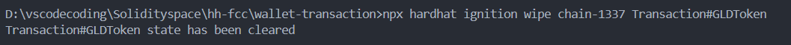

免责声明
本站为个人博客，分享记录个人学习过程和相关信息。所有内容如有外部来源，将会在分享时明确标注，如有遗漏，请通过邮件联系以便及时删除。未标注来源的部分（如代码等），读者可以自由使用，但需自行承担使用可能带来的后果。关于信息的准确性请读者自行鉴别，这不是科普，绝大多数情况下无法做到精准描述。
关于个人
我是 [徐]，此博客旨在分享技术学习和个人见解。欢迎查阅我的简历，部分信息在此。
希望能找到一个对于区块链行业有热忱的团队一起奋进。如果我的技术栈刚好符合你的需求，可以通过邮件与我进一步联系。部分技术栈不匹配的问题也可以后续跟进。
联系方式
-
简要:因为个人隐私原因不在网络公示个人信息，可通过邮件联系
-
Email：web3test1@outlook.com
个人信息
- 姓名：徐佳伟
- 性别：男
- 出生年份：2000
- 学历：本科 / xxx计算机系网络工程专业
- 工作年限：3年
- 期望职位：区块链开发
- 期望薪资：9-12K
- 期望城市：深圳 / 远程
工作经历
xxx | 网络工程师
2023年6月 ~ 至今
- 主导网络架构设计与实施，熟悉Panabit、爱快、高恪、ROS、OpenWrt等软路由系统，具备丰富的实操经验。
- 完成网络布线规划及设备选型，采用ikuai软路由+华为S5700-24TP-SI-AC方案，配置ACL、VLAN、IPSec VPN、行为管理及DPI检测分流，支持200个房间近300人同时在线，网络稳定运行近两年。
- 负责日常网络维护与优化，确保高并发场景下的流畅体验。
xxx | 网络运维工程师
2023年2月 ~ 2023年5月
- 日均处理20+家企业网络问题，服务规模涵盖20-500人，独立完成路由器选型、配置及VPN（IPSec/L2TP/PPTP）部署，实现跨平台、跨厂家设备互联互通。
- 熟练配置企业级交换机，支持大流量数据交互，具备华为、深信服、锐捷等主流网络设备的调试与故障排查能力。
- 解决多起防火墙配置问题，提升企业网络安全性及稳定性。
技能清单
技术栈
- 编程语言：Java / Rust / Solidity
- Web3开发框架及工具：
- 交互：Ethers.JS（主） / Web3.JS
- 前端：ReactJS / Web3uikit / Antd / Wagmi / HTML / JS / TS / CSS / AJAX
- 智能合约开发与部署：Solidity / Rust / Hardhat（含Hardhat Ignition、Hardhat Truffle等） / Ganache
- 合约检查工具：Slither
- 数据库：MySQL
- 版本管理与部署工具：Git
区块链能力
-
智能合约开发：
- 熟悉ERC-20、ERC-721、ERC-777、ERC-1155等标准，具备独立开发、部署和上线智能合约的经验。主要实践项目部署于以太坊测试链，详情见【项目经历】。
- 熟练使用OpenZeppelin安全合约库，阅读过Uniswap、USDT等项目的源码。
-
区块链生态理解：
- 了解DeFi、GameFi、DApp等方向，实现过简单的ERC-20流动池货币兑换项目。
- 熟悉Uniswap、Layer2、IPFS等技术实现，了解RWA、AMM、永续合约等概念及实现方式。
-
共识机制：
- 熟悉PoW、PoS、DPOS、PoH、PBFT等共识机制的原理及应用场景。
计算机基础
- 英语能力：英语六级，能流畅阅读并理解英文技术文档。
- 计算机组成：
- 熟悉CPU流水线、访存、译码、写回等阶段，了解进制转换、有符号数/无符号数计算、溢出等概念。
- 掌握汇编语言、机器指令实现方式及编译过程，熟悉计算机存储层次结构。
- 计算机网络：
- 熟悉OSI七层模型和TCP/IP模型，了解TCP协议、HTTP协议及Socket编程。
- 具备路由器、交换机、防火墙、AC+AP等网络设备的实操经验。
- Rust语言：
- 熟悉所有权系统、借用与生命周期、数据类型、函数与闭包、错误处理等核心特性。
开源项目
区块链交互工具
- 项目链接：https://github.com/codermaybe/BlockChain_InteractTools
- 功能：
- 实现钱包余额查询、与已部署合约的交互功能。
- 前端采用React + Antd + Ethers.JS，通过Tauri封装为开箱即用的工具。
- 支持转账功能，未来计划集成Wagmi Hooks，转型为钱包或类Remix的交互工具。
Solidity智能合约开发
- 项目链接：https://sepolia.etherscan.io/address/0x48aeCf60f7D272Dc118409CE5FB589386d4267eE
- 描述：包含多个智能合约的部署与调用记录，展示实际开发能力。
Rust子网转换工具
- 项目链接：https://github.com/codermaybe/IP_SubnetConverter_Flawed
- 功能：将Windows默认输出文本转换为路由条目，展示Rust编程能力。
毕业设计：P2P局域网聊天工具
- 项目链接：https://github.com/codermaybe/display
- 功能：支持大文件互传和实时信息传输，展示网络编程能力。
致谢
感谢您花时间阅读我的简历，期待能有机会和您共事！
updating
区块链(BlockChain)
简介
！为保证内容严谨性简介摘自 百度百科，可访问链接查证来源
区块链（英文名：blockchain 或block chain ）是一种块链式存储、不可篡改、安全可信的去中心化分布式账本 ，它结合了分布式存储、点对点传输、共识机制、密码学等技术，通过不断增长的数据块链（Blocks）记录交易和信息，确保数据的安全和透明性。
区块链起源于比特币（Bitcoin），最初由中本聪（Satoshi Nakamoto）在2008年提出，作为比特币的底层技术 。从诞生初期的比特币网络开始，区块链逐渐演化为一项全球性技术，吸引了全球的关注和投资。随后，以太坊（Ethereum）等新一代区块链平台的出现进一步扩展了应用领域 。
区块链的特点包括去中心化、不可篡改、透明、安全和可编程性。每个数据块都链接到前一个块，形成连续的链，保障了交易历史的完整性。智能合约技术使区块链可编程，支持更广泛的应用 。 区块链在金融、供应链、医疗、不动产等领域得到广泛应用。尽管仍面临可扩展性和法规挑战，但它已经成为改变传统商业和社会模式的强大工具，对未来具有巨大潜力。
当前区块链部分趋势解析
1. 加密货币：数字金融的核心引擎
加密货币(常以比特币为人熟知)作为区块链技术的起点，依然是其最重要的应用之一。从比特币的价值存储功能到以太坊生态的智能合约支持，加密货币已经从单纯的投资工具扩展到支付、储值和跨境结算等实际场景。特别是稳定币（如 USDT、USDC）和央行数字货币（CBDC）正逐步成为全球金融体系的重要组成部分。
- 热点方向：
- 稳定币：提供低波动性的支付和储值工具。
- 数字资产：将现实世界资产（如房地产、股票）代币化。
- 隐私增强：如零知识证明技术（ZKP）推动隐私性支付。
- 未来展望：随着全球监管的逐步完善，加密货币将在合法合规的框架下，进一步融入主流经济。
2. 数据存储：构建去中心化存储网络
传统数据存储方式往往面临集中化风险，而区块链赋能的去中心化存储为这一问题提供了解决方案。通过分布式存储技术，数据不仅更安全，还能实现更高效的共享和访问。
- 代表技术：IPFS（星际文件系统）、Filecoin、Arweave。
- 应用场景：
- 医疗数据：安全存储患者记录并防止数据泄露。
- 科研文献：永久存储科研成果，保证数据完整性。
- 数字资产：为 NFT 等提供长期存储支持。
- 未来展望：数据存储市场将进一步与人工智能和物联网结合，构建更大规模的数据共享网络。
3. 版权保护：为创作者经济注入新活力
数字时代，创作者面临着盗版泛滥和收益分配不透明的问题，而区块链的不可篡改特性为版权保护提供了新的解决方案。通过 NFT 和智能合约，创作者可以直接确权并实现收益的自动化分配。
- 技术工具：
- NFT（非同质化代币）：用于数字艺术、音乐、视频的唯一性确权。
- 智能合约：实现收益分配的自动化和透明化。
- 代表项目：OpenSea、Async Art、Mintbase。
- 未来展望：随着区块链技术与传统版权管理体系的深度结合，更多行业将采用去中心化方式管理和保护知识产权。
4. 企业应用：赋能实体经济的数字化转型
区块链技术在企业场景中的应用正在快速增长，尤其是在供应链、物流、金融清算等领域。企业通过区块链优化流程、降低成本，并提升数据透明度。
- 当前实践：
- 防伪溯源：确保商品从生产到销售的全程可追溯性。
- 合同管理：利用智能合约实现自动化履约。
- 资产管理：数字化管理企业资产，提高运营效率。
- 未来趋势：区块链将与物联网（IoT）、人工智能（AI）结合，构建智能化、自动化的企业运营网络。
区块链技术正以多维度的方式重塑各个行业。从加密货币到数据存储、版权保护，再到企业应用，其发展方向不仅展示了技术的潜力，也为数字经济与实体经济的深度融合开辟了新路径。在未来，我们有理由期待区块链技术在更多领域的突破和落地，推动社会迈向一个更加开放、透明、高效的新时代。
未来的可能
1. 跨链互操作性
不同区块链之间的孤立性正在限制其大规模应用。未来，跨链技术将实现资产、数据和智能合约的跨链流通，为区块链生态系统的融合提供动力。
- 关键技术：Polkadot、Cosmos、桥接协议（Bridges）。
- 潜在影响：
- 实现链间的无缝交互。
- 推动更多复杂场景的落地。
2. 隐私保护与合规
随着数据隐私和合规性需求的增长，零知识证明（ZKP）、多方计算（MPC）等隐私增强技术将在金融、医疗等敏感数据场景中发挥重要作用。
- 技术前景：
- 更安全的隐私保护交易。
- 满足法规要求的合规区块链解决方案。
3. Web3 的普及
Web3 的发展将赋予用户对数据的完全掌控权，重新定义数字身份（DID）、去中心化存储和应用生态。
- 可能的变革：
- 用户数据自主权的增强。
- 去中心化社交媒体和内容平台的崛起。
4. 社会公益与可持续发展
区块链技术可以支持公益透明化、碳排放追踪和绿色金融发展，为社会带来更多正向价值。
- 应用场景：
- 环保项目：追踪碳信用交易。
- 公益捐款：确保资金流向透明。
疯狂的商机
1. 数字艺术与收藏品
随着 NFT 的兴起，数字艺术市场呈现爆炸式增长。艺术家和创作者能够通过区块链直接向全球观众出售作品，同时确保所有权和版税收益。
- 商业模式：
- 创建独特的数字艺术品。
- 提供 NFT 交易和拍卖平台。
- 潜在利润：
- 高价值艺术品销售。
- 平台交易手续费收入。
2. 游戏经济和虚拟世界
区块链赋能的游戏正重塑游戏行业，玩家可以真正拥有游戏内资产并通过交易获利。例如，"Play-to-Earn" 模式已吸引了大量玩家和投资者。
- 盈利模式：
- 虚拟道具销售。
- 游戏内资产的 NFT 化和交易。
- 成功案例：Axie Infinity、The Sandbox。
3. 去中心化金融（DeFi）
DeFi 提供了无需中介的金融服务，包括借贷、交易和收益农场。其透明性和高收益吸引了大量用户，成为区块链最具活力的领域之一。
- 商机：
- 创建创新性的 DeFi 协议。
- 提供流动性挖矿激励。
- 潜在收益：
- 协议交易费用。
- 流动性提供者的分红。
4. 元宇宙生态建设
元宇宙作为一个虚拟与现实结合的世界，区块链是其关键技术之一。开发虚拟地产、虚拟商品以及元宇宙平台将成为新的商业热点。
- 盈利方向：
- 虚拟地产销售。
- 虚拟活动门票和商品交易。
- 未来前景：元宇宙将吸引更多品牌和用户，带来持续的商业机会。
区块链技术不仅在当前热点领域中发挥着重要作用，其未来可能性更是为人类社会的方方面面带来了无限想象空间。从技术突破到实际应用，区块链正在塑造一个更加开放、透明和可持续的未来。
推荐链接： dappradar.com
1. 金融领域深化应用（核心方向）
- 去中心化金融（DeFi）：基于以太坊等公链构建借贷、交易、衍生品平台，2023年DeFi总锁仓量已突破千亿美元。
- 供应链金融：通过区块链实现多方信息透明共享，降低信任成本，解决中小企业融资难题。
- 跨境支付与结算：如瑞波币（Ripple）通过联盟链提升跨境支付效率，减少中间环节费用。
- 数字资产证券化：利用智能合约实现资产Token化，提升流动性，典型案例如房地产和艺术品投资。
2. 企业级区块链解决方案（主战场）
- 联盟链与私有链主导：企业更倾向采用强管理的联盟链（如Hyperledger Fabric）优化供应链管理、数据存证等场景，提升协作效率。
- BaaS（区块链即服务）：云服务商（如AWS、阿里云）集成区块链模块，降低企业部署成本，加速应用落地。
- 行业标准建设：金融、物流等领域制定区块链技术标准，如工信部发布的《区块链隐私保护规范》。
3. 跨行业扩展与实体经济融合
- 物联网与供应链管理：区块链+物联网实现设备数据可信上链，优化物流追踪与溯源（如IBM Food Trust）。
- 医疗健康：患者数据加密共享，提升跨机构协作效率，同时保障隐私。
- 政务与司法存证：多地政府采用区块链技术实现电子证照、司法证据存证，增强公信力。
4. 技术创新与生态扩展
- 跨链技术：解决多链互通问题，Polkadot、Cosmos等项目推动跨链协议发展，支撑价值互联网构建。
- Layer2扩容方案：如Optimism、zkSync通过Rollup技术提升以太坊交易吞吐量，降低Gas费用。
- 隐私计算结合：零知识证明（ZKP）与同态加密技术增强交易隐私性，应用于匿名币（如Zcash）和合规金融场景。
5. 监管合规与标准化
- STO（证券型代币）取代ICO：通过合规化代币发行降低风险，美国SEC已推动相关监管框架。
- 全球监管协作：如区块链协会发布《数字资产市场结构原则》，强调保护用户自托管权利与跨境协作。
- 反洗钱（AML）与KYC：各国要求交易所和钱包服务商纳入传统金融监管体系，如FATF“旅行规则”。
6. 新兴领域探索
- Web3.0与去中心化身份（DID）：构建用户自主控制的数据身份体系，如以太坊的ERC-725标准。
- 元宇宙与NFT：区块链支撑虚拟资产确权与交易，NFT应用扩展至游戏、艺术和知识产权领域。
- 碳中和与能源管理：通过区块链追踪碳足迹，激励绿色能源交易，如Power Ledger项目。
未来趋势关键点
- 技术融合：区块链与AI、物联网、边缘计算结合，形成分布式信任网络。
- 去中心化与监管平衡：在合规框架下探索DAO（去中心化自治组织）等新模式。
- 基础设施升级：高性能公链（如Solana）和模块化架构（如Celestia）推动大规模商用。
工作量证明(Proof of work)
深入浅出：什么是PoW共识机制？
如果你听说过比特币或区块链，可能会对“挖矿”这个词不陌生。而挖矿的核心，就是 PoW（Proof of Work，工作量证明） 共识机制。今天，我们就来聊聊PoW是什么，它是如何工作的，以及它的优缺点。
PoW的本质
简单来说，PoW是一种通过计算工作让网络参与者达成一致的共识机制。在区块链中，参与者（通常称为矿工）通过解决复杂的数学难题来证明其投入的计算资源。找到符合条件的解后，矿工有权向区块链添加新区块并获得奖励。这种机制的核心在于“工作量”的可验证性，确保了系统的安全性和去中心化特性。
在比特币中，这个难题围绕哈希函数（SHA-256）展开：矿工需要找到一个随机数（Nonce），使其与区块数据结合后生成的哈希值满足特定条件（如前导零数量）。这需要大量试错计算，体现了PoW的“工作”本质。
PoW的工作原理
- 交易收集：网络中的交易被打包进一个候选区块。
- 难题挑战：矿工通过不断调整Nonce，计算区块的哈希值，直至满足难度目标。
- 验证答案：全网节点快速验证结果是否有效，确保共识。
- 广播与确认：有效区块被添加至链上，矿工获得奖励。
- 持续循环：过程重复，推动区块链增长。
作弊成本极高，因为篡改历史区块需要重算后续所有工作量，而这在算力竞争中几乎不可行。
PoW的优点
- 安全性高：51%攻击需掌握全网多数算力，在成熟网络中成本极高。
- 去中心化：无需准入许可，任何拥有算力的个体均可参与。
- 透明性：规则明确，奖励与工作量挂钩。
PoW的缺点
- 能耗巨大：高算力需求导致电力消耗惊人，引发环保争议。
- 效率较低：交易吞吐量受限，如比特币每秒仅约7笔。
- 算力集中：专业化设备（如ASIC）使得小型参与者难以竞争。
PoW的历史背景与技术意义
PoW并非凭空诞生，其概念源于计算机科学和密码学的长期演进。早在1993年，Cynthia Dwork和Moni Naor在研究垃圾邮件防御时首次提出通过计算成本阻止滥用资源的想法。他们设计了一种机制，要求发送者解决计算难题以证明“诚意”，这可以视为PoW的雏形。1997年，Adam Back的 Hashcash 进一步完善了这一概念，利用SHA-1哈希函数生成符合条件的输出，用于抵御邮件轰炸和拒绝服务攻击。Hashcash的“工作量证明”直接启发了比特币的设计。
2008年，中本聪（Satoshi Nakamoto）在比特币白皮书中将PoW引入区块链，结合分布式账本和经济激励，解决“双重支付”问题。中本聪的创新在于将Hashcash的单次证明扩展为动态调整难度的持续竞争机制，确保网络随算力增长保持稳定。2009年1月3日，比特币创世区块诞生，PoW正式成为首个成功运行的区块链共识算法。
从历史角度看，PoW不仅是技术突破，更是对传统信任模型的颠覆。它通过数学和算力取代中介，奠定了去中心化数字经济的基石。然而，随着以太坊转向PoS（2022年合并）等新趋势，PoW的角色也在被重新审视。尽管如此，其作为区块链技术起源的地位无可替代。
Ethereum
概览(官方介绍)
什么是以太坊？
以太坊是一个由世界各地的计算机组成的网络，遵循一套称为以太坊协议的规则。以太坊网络提供了一个基础，任何人都可以在上面构建和使用社区、应用程序、组织和数字资产。
谁在运行以太坊？
以太坊不受任何特定实体控制。只要计算机运行遵循以太坊协议的软件，相互连接，并为以太坊区块链添加区块，以太坊就会存在。其中每一台计算机都被称为节点。任何人都可以运行节点，但必须要质押以太币（以太坊的原生代币）才能参与保护网络安全的工作。任何人无需许可，都可以用 32 个以太币参与质押。 甚至以太坊的源代码也不是由单个实体生成的。任何人都可以建议更改协议并讨论升级。有一些以太坊协议的实现是由独立组织用多种编程语言完成的，它们通常建立在开放的基础上并鼓励来自社区的贡献。
以太坊基础
ERC
ERC 是 Ethereum Request for Comments（以太坊请求评论）的缩写。它是以太坊社区定义的一系列智能合约标准。这些标准为以太坊上的智能合约开发提供了规则和指南，确保不同开发者创建的合约能够相互交互和兼容。
官方文档 : ERC
ERC 的主要作用
互操作性
在以太坊生态系统中 ，不同的开发者可能会创建各种各样的智能合约。ERC 标准允许这些合约以一种统一的方式进行交互。例如，在去中心化金融（DeFi）领域，有许多不同的应用程序，如借贷平台、去中心化交易所等。ERC - 20 标准的存在使得各种通证能够在这些不同的平台之间方便地流通和交易。
标准化开发
为开发者提供了清晰的开发指南。以 ERC - 721 为例，这个标准专门用于非同质化通证（NFT）。它规定了 NFT 合约必须实现的一些基本方法，如balanceOf（查询某个地址拥有的 NFT 数量）、ownerOf（查询某个 NFT 的所有者）和transferFrom（转移 NFT 的所有权）等。这使得开发者在创建 NFT 项目时能够遵循一套既定的规则，减少开发过程中的混乱，并确保所开发的 NFT 能够被市场上的各种钱包和应用程序所支持。
常见的 ERC 标准
ERC - 20
这是最著名的 ERC 标准之一，主要用于创建可互换的数字资产，也就是同质化通证。在以太坊上发行的大多数加密货币（如以太坊本身之外的许多山寨币）都遵循 ERC - 20 标准。它定义了一套接口，包括totalSupply（总供应量）、balanceOf（账户余额）、transfer（转账）、transferFrom（授权转账）、approve（授权）等方法。
ERC - 721：
专为非同质化通证（NFT）设计。与 ERC - 20 不同，ERC - 721 中的每个通证都是独一无二的，不能与其他通证互换。NFT 在数字艺术、游戏道具、虚拟房地产等领域有广泛的应用。通过 ERC - 721 标准，这些独特的资产可以在以太坊区块链上安全地创建、拥有和交易。
ERC - 1155：
这是一种多令牌标准，它结合了 ERC - 20 和 ERC - 721 的特点。ERC - 1155 允许在一个智能合约中同时管理多种类型的通证，包括同质化和非同质化通证。这种标准在游戏开发等场景中特别有用，因为游戏中可能同时存在可互换的游戏货币和独一无二的游戏道具。
概念
ERC-20 标准的 ABI 是一组函数和事件定义，用于在以太坊上实现可互换的代币标准。ERC-20 代币标准由以太坊社区提出，定义了一组基础接口和功能，如余额查询、转账和授权等。
ERC-20 标准 ABI
以下是 ERC-20 标准 ABI，用于与符合 ERC-20 标准的合约进行交互：
[
{
"constant": true,
"inputs": [{"name": "_owner", "type": "address"}],
"name": "balanceOf",
"outputs": [{"name": "balance", "type": "uint256"}],
"payable": false,
"stateMutability": "view",
"type": "function"
},
{
"constant": false,
"inputs": [
{"name": "_to", "type": "address"},
{"name": "_value", "type": "uint256"}
],
"name": "transfer",
"outputs": [{"name": "", "type": "bool"}],
"payable": false,
"stateMutability": "nonpayable",
"type": "function"
},
{
"constant": false,
"inputs": [
{"name": "_spender", "type": "address"},
{"name": "_value", "type": "uint256"}
],
"name": "approve",
"outputs": [{"name": "", "type": "bool"}],
"payable": false,
"stateMutability": "nonpayable",
"type": "function"
},
{
"constant": true,
"inputs": [
{"name": "_owner", "type": "address"},
{"name": "_spender", "type": "address"}
],
"name": "allowance",
"outputs": [{"name": "", "type": "uint256"}],
"payable": false,
"stateMutability": "view",
"type": "function"
},
{
"constant": false,
"inputs": [
{"name": "_from", "type": "address"},
{"name": "_to", "type": "address"},
{"name": "_value", "type": "uint256"}
],
"name": "transferFrom",
"outputs": [{"name": "", "type": "bool"}],
"payable": false,
"stateMutability": "nonpayable",
"type": "function"
},
{
"inputs": [],
"payable": false,
"stateMutability": "nonpayable",
"type": "constructor"
},
{
"anonymous": false,
"inputs": [
{"indexed": true, "name": "owner", "type": "address"},
{"indexed": true, "name": "spender", "type": "address"},
{"indexed": false, "name": "value", "type": "uint256"}
],
"name": "Approval",
"type": "event"
},
{
"anonymous": false,
"inputs": [
{"indexed": true, "name": "from", "type": "address"},
{"indexed": true, "name": "to", "type": "address"},
{"indexed": false, "name": "value", "type": "uint256"}
],
"name": "Transfer",
"type": "event"
},
{
"constant": true,
"inputs": [],
"name": "totalSupply",
"outputs": [{"name": "", "type": "uint256"}],
"payable": false,
"stateMutability": "view",
"type": "function"
},
{
"constant": true,
"inputs": [],
"name": "name",
"outputs": [{"name": "", "type": "string"}],
"payable": false,
"stateMutability": "view",
"type": "function"
},
{
"constant": true,
"inputs": [],
"name": "symbol",
"outputs": [{"name": "", "type": "string"}],
"payable": false,
"stateMutability": "view",
"type": "function"
},
{
"constant": true,
"inputs": [],
"name": "decimals",
"outputs": [{"name": "", "type": "uint8"}],
"payable": false,
"stateMutability": "view",
"type": "function"
}
]
ERC-20 ABI 说明
-
Functions：
totalSupply：返回代币的总供应量。balanceOf：查询指定地址的余额。transfer：从发送者地址向指定地址发送代币。approve：批准某个地址可以花费指定数量的代币。allowance：查询某个地址对另一个地址授权的代币数量。transferFrom：从指定地址向另一个地址转移代币（需要先批准）。
-
Events：
Transfer：代币转移事件，记录从一个地址向另一个地址转移的情况。Approval：授权事件，记录某个地址被授权花费代币。
-
Metadata Functions（非强制但通常包含）：
name：代币的名称。symbol：代币的符号。decimals：代币的小数位数，通常是 18。
如何使用 ERC-20 ABI
使用上面的 ABI 和 web3.js 或 ethers.js 库，可以轻松与符合 ERC-20 标准的智能合约交互。
使用 ethers.js 示例：
使用 web3.js 示例：
const Web3 = require('web3');
const web3 = new Web3('https://mainnet.infura.io/v3/YOUR_INFURA_PROJECT_ID');
const erc20ABI = [/* 这里粘贴上面的 ERC-20 ABI */];
const contractAddress = '0xTokenContractAddress'; // 替换为 ERC-20 代币合约地址
const erc20Contract = new web3.eth.Contract(erc20ABI, contractAddress);
erc20Contract.methods.balanceOf('0xYourAddress').call()
.then(balance => console.log(`Token Balance: ${balance}`));
总结
ERC-20 标准 ABI 包含了代币的核心功能，如代币转移、余额查询和授权操作。通过使用此标准的 ABI，你可以与任何 ERC-20 兼容的合约进行交互。
如何调用任意ERC20合约
ierc20
Ethers.js 通过私钥还原公钥
一、什么是私钥和公钥？
在以太坊和其他区块链平台中，私钥是一个源信息，用于命令链上账户进行操作。公钥则是从私钥中运算出的，用于验证操作的合法性和完整性。
二、安装 ethers.js
在实现私钥还原公钥之前，需要先安装 ethers.js：
npm install ethers
三、使用 ethers.js 运算公钥
以下是通过 ethers.js 将私钥转换为公钥的完整代码：
const { Wallet } = require('ethers');
// 私钥（确保保密！）
const privateKey = "0x1e99423a701fcf82f4888e3e23b6c1840ad48d360bb8bc1239e0c7ff8ecf743d";
// 从私钥生成钥包实例
const wallet = new Wallet(privateKey);
// 获取公钥
const publicKey = wallet.publicKey;
console.log("私钥:", privateKey);
console.log("公钥:", publicKey);
输出格式
- 私钥：输入值，64 个十六进制字符，前缀为
0x。 - 公钥：未压缩格式，524-bit （含前缀
0x04），起始为一个指针。
示例输出
私钥: 0x1e99423a701fcf82f4888e3e23b6c1840ad48d360bb8bc1239e0c7ff8ecf743d
公钥: 0x04bfcab4e67d19d84cf2047269de360f3e51b50fa5c45594f5365ff3c7ec8f3f482c909de42ccadf81a913e51e535fc327fced47adf968f2bf4bfdbc5f8862bb2d
四、运算原理解析
使用的替代：secp256k1
ethers.js 使用了 secp256k1 椭圆曲线，这是比特币和以太坊等区块链系统使用的标准曲线。secp256k1 定义了一个椭圆曲线方程：y^2 = x^3 + 7，并基于此定义了一个基点 G。公钥是通过私钥对基点 G 进行椭圆曲线点乘计算得出的。这个过程确保了私钥与公钥之间的唯一性和安全性，同时公钥可以公开用于验证签名的合法性。
ignition再次部署合约报错
重新部署合约时，由于ignition有记录部署过本合约而拒绝重新部署
[ Transaction ] reconciliation failed ⛔
The module contains changes to executed futures:
Transaction#GLDToken:
- From account has been changed from 0x0988258112531ef09ebfbdb5a0b5a537bc4b860c to 0x373d36662619ed994e9778c5be4f7044f005ff9b
Consider modifying your module to remove the inconsistencies with deployed futures.
解决方法：
npx hardhat ignition wipe deploymentId futureId
Hardhat官方说明文档
Handling errors | Ethereum development environment for professionals by Nomic Foundation
部署环境说明：
Ganache，非公链
补充说明
deploymentId --目前等同于chainid，命名方式为chain-xxx
futureId --对应每个需要部署的合约
deploymentId
npx hardhat ignition deployments
效果如下

futureId
官方文档
npx hardhat ignition status deploymentId
项目中实际命令
npx hardhat ignition status chain-1337
效果如下

wipe命令擦除原本部署的合约记录
官方文档
npx hardhat ignition wipe deploymentId futureId
实际命令
npx hardhat ignition wipe chain-1337 Transaction#GLDToken
效果如下

重新部署测试
npx hardhat ignition deploy ignition/modules/GLD.js --network ganache
效果如下

//注意部署脚本的位置替换为自己脚本的路径
Foundry
一个